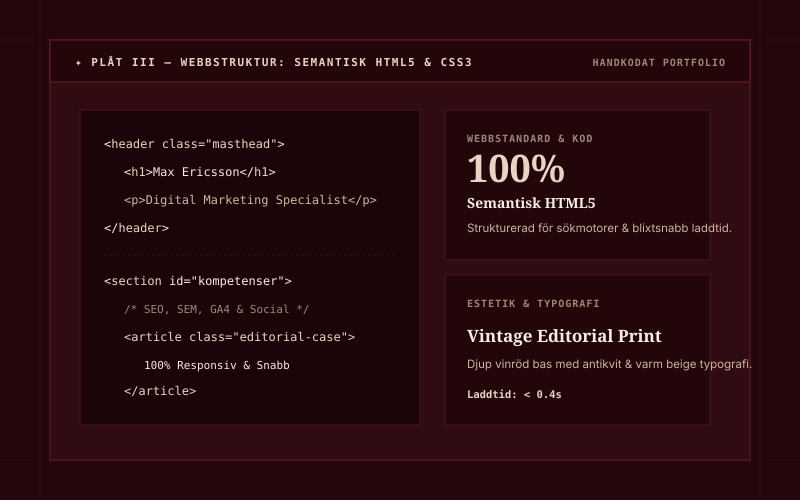
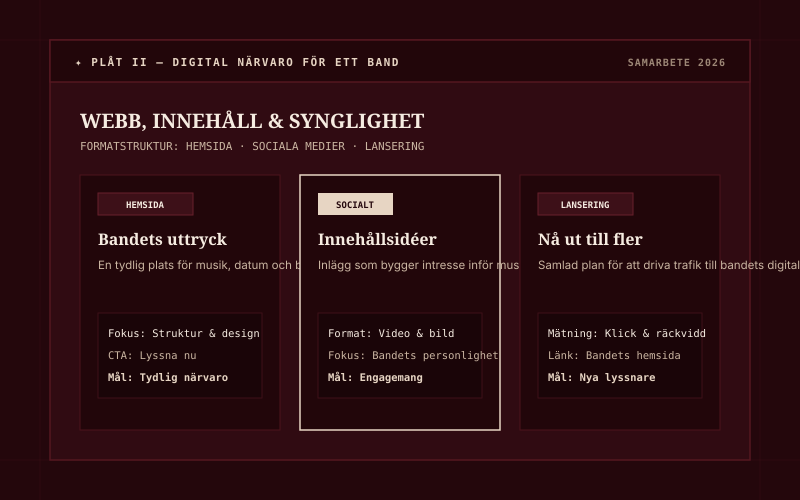
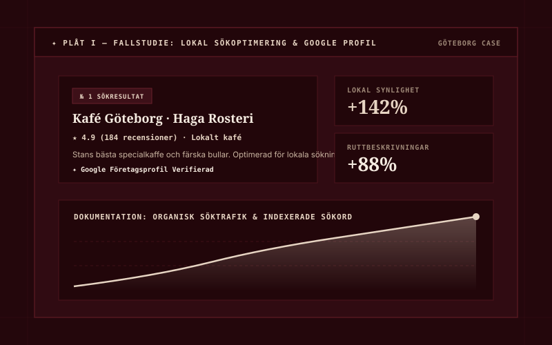

Min personliga portfolio
Jag har byggt min egen hemsida från grunden för att presentera mina kompetenser, projekt och kontaktuppgifter i ett personligt digitalt format.
Digital Marketing Specialist · Studerande vid IHM Business School
Jag studerar till Digital Marketing Specialist på IHM Business School i Göteborg. Med en stark bakgrund inom service och kundkontakt kombinerar jag djup förståelse för målgruppers behov med moderna verktyg inom SEO, SEM, sociala medier och webbanalys.
Fig. 01 — Max Ericsson · Göteborg
Jag är en driven, nyfiken och lösningsorienterad person som brinner för digital marknadsföring och hur smart kommunikation kan lyfta varumärken online.
Min yrkesbakgrund har gett mig en stabil grund inom kundbemötande, samarbete och ett högt arbetstempo från restaurangbranschen. Där lärde jag mig vikten av att snabbt förstå människors behov, hantera stressiga situationer och alltid leverera personlig service med hög kvalitet.
“Från restaurangvärlden tar jag med mig förståelsen för människor och service. På IHM omsätter jag det i datadriven marknadsföring och tydliga resultat.”
Den erfarenheten tar jag nu med mig in i mina studier till Digital Marketing Specialist på IHM Business School. Jag fascineras särskilt av kombinationen mellan kreativt innehåll och data – att inte bara skapa engagerande kampanjer utan också mäta, analysera och optimera resultaten för att skapa verklig affärsnytta.
Jag söker nu spännande utmaningar, LIA-praktik och möjligheter att bidra med energi, nya kunskaper och resultat hos ett framåtlutat företag.
Här är de kurser och områden jag har genomfört inom digital marknadsföring.
Genomförd kurs med fokus på hur marknadsföring, AI och digital teknik kan användas i det dagliga marknadsföringsarbetet.
Genomförd kurs inom karriärplanering med fokus på att formulera riktning, mål och en tydlig professionell profil inför arbetslivet.
Genomförd kurs inom sökmotoroptimering med fokus på att göra innehåll och webbplatser mer synliga i organiska sökresultat.
Genomförd kurs inom betald digital annonsering, sociala medier och sökordsannonsering.
Genomförd kurs med fokus på innehåll i digitala kanaler och influencer marketing som en del av marknadsföringsmixen.
Genomförd kurs inom att följa upp digitala aktiviteter, tolka data och använda insikter i marknadsföringsarbetet.
Ett urval av egna projekt, samarbeten och praktiska case:

Jag har byggt min egen hemsida från grunden för att presentera mina kompetenser, projekt och kontaktuppgifter i ett personligt digitalt format.

Hjälper en väns band med hemsidebyggande och digital marknadsföring, med fokus på att skapa en tydligare digital närvaro och nå ut till rätt publik.

Ett eget case där jag tar fram en digital kampanjplan med målgrupp, kanalval, innehållsidéer och relevanta mätpunkter för uppföljning.
Vill du diskutera LIA-praktik, ett framtida projekt eller ta en digital kaffe? Tveka inte att höra av dig!
Fyll i formuläret så öppnas ett färdigt e-postmeddelande till mig.